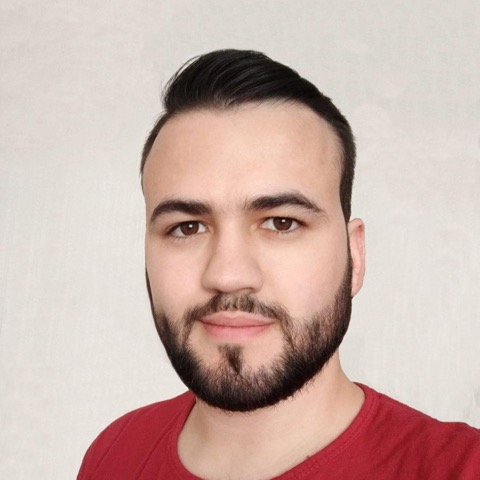

Victor Croitoru
Dezvoltator iOS · Swift, SwiftUI · Web
Deschis la oferte
Chișinău, Moldova
Disponibil pentru remote
linkedin.com/in/victor-croitoru-dev001
facebook.com/victor.croitoru.dev

Despre mine
Dezvoltator iOS cu 2,5 ani de experiență comercială (martie 2024 — septembrie 2026). Am dezvoltat aplicații utilitare pentru iPhone în Swift și SwiftUI: am construit ecrane de la zero pe baza machetelor, am integrat API-uri REST, am stocat datele local cu Core Data și SwiftData și am creat widgeturi. Sunt gata să lucrez și la proiecte web: landing page-uri și site-uri. Lucrez cu Claude Code.
Ce caut
- Un post remote cu normă întreagă: dezvoltare iOS (Swift, SwiftUI) și proiecte web (landing page-uri, site-uri). Lucrez cu Claude Code și pot lucra după fusul orar al echipei.
- Proiecte în Swift și SwiftUI, unde îmi pot extinde setul de tehnologii.
- O echipă cu code review, ca să cresc până la nivelul middle+.
Experiență
Dezvoltator iOS
- Am dezvoltat aplicații utilitare pentru iPhone în Swift și SwiftUI.
- Am construit ecrane de la zero pe baza machetelor Figma: navigare, stări de încărcare și de eroare, adaptare pentru diferite dimensiuni de ecran.
- Am integrat API-uri REST: lucrul cu JSON, cereri asincrone prin async/await, tratarea erorilor de rețea.
- Am stocat datele pe dispozitiv cu Core Data și SwiftData, inclusiv pentru funcționarea fără internet.
- Am integrat servicii terțe: Firebase, PushWoosh, Dropbox.
- Am creat widgeturi pentru ecranul principal (WidgetKit).
- Am lucrat în echipă și am primit sarcinile în Jira.
Educație
Universitatea Tehnică a Moldovei
Inginer. Securitatea Sistemelor Electronice și de Telecomunicații.
Limbi
Românănativ
Rusăfluent
Englezădocumentație